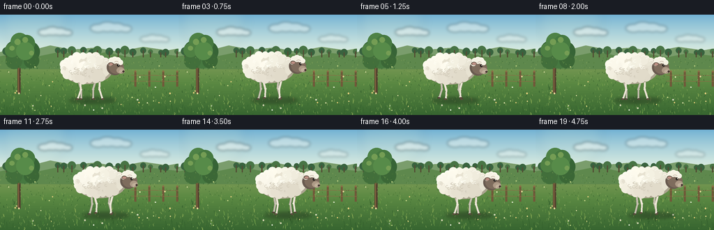
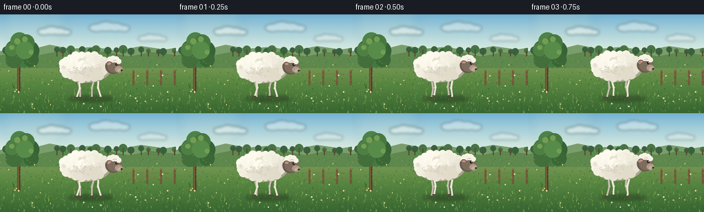
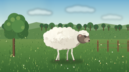
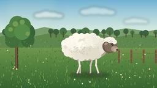
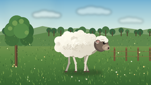

CODING AGENTS AS PIXEL WORLD MODELS
traex/DeepSeek-V4.1-Flash · instance_preservation_0015
点击播放 · 原生 RGB 像素
逐轮保存的候选
回放视频、检查图与代码变化。
每份候选均可单独播放。实际图片检查记录在下方工具轨迹中。
候选 01播放与检查图
点击播放 · 原生 RGB 像素


展开代码变化
--- 上一保存版本
+++ 本次保存版本
@@ -0,0 +1,440 @@
+from __future__ import annotations
+
+import math
+import random
+from pathlib import Path
+
+import numpy as np
+from PIL import Image, ImageDraw, ImageFilter
+
+import artifact_io
+
+
+WIDTH = 256
+HEIGHT = 144
+FRAMES = 20
+FPS = 4.0
+SCALE = 3
+CANVAS_W = WIDTH * SCALE
+CANVAS_H = HEIGHT * SCALE
+
+
+def s(value: float) -> int:
+ return int(round(value * SCALE))
+
+
+def box(x0: float, y0: float, x1: float, y1: float) -> tuple[int, int, int, int]:
+ return s(x0), s(y0), s(x1), s(y1)
+
+
+def point(x: float, y: float) -> tuple[int, int]:
+ return s(x), s(y)
+
+
+def blend(a: tuple[int, int, int], b: tuple[int, int, int], t: float) -> tuple[int, int, int]:
+ return tuple(int(round(a[i] + (b[i] - a[i]) * t)) for i in range(3))
+
+
+def make_background() -> Image.Image:
+ horizon = 54.0
+ top_sky = np.array((112, 177, 211), dtype=np.float32)
+ low_sky = np.array((220, 237, 225), dtype=np.float32)
+ field_top = np.array((142, 164, 96), dtype=np.float32)
+ field_mid = np.array((91, 137, 67), dtype=np.float32)
+ field_low = np.array((55, 101, 48), dtype=np.float32)
+
+ pixels = np.zeros((CANVAS_H, CANVAS_W, 3), dtype=np.uint8)
+ for y in range(CANVAS_H):
+ fy = y / SCALE
+ if fy < horizon:
+ t = min(1.0, fy / horizon)
+ color = top_sky + (low_sky - top_sky) * (t**0.82)
+ else:
+ t = (fy - horizon) / (HEIGHT - horizon)
+ if t < 0.48:
+ color = field_top + (field_mid - field_top) * (t / 0.48)
+ else:
+ color = field_mid + (field_low - field_mid) * ((t - 0.48) / 0.52)
+ pixels[y, :, :] = np.clip(color, 0, 255).astype(np.uint8)
+
+ image = Image.fromarray(pixels).convert("RGBA")
+ draw = ImageDraw.Draw(image, "RGBA")
+
+ # Soft morning glow, strongest above and left of the sheep.
+ glow = Image.new("RGBA", image.size, (0, 0, 0, 0))
+ gd = ImageDraw.Draw(glow, "RGBA")
+ for radius, alpha in ((46, 14), (34, 18), (22, 20), (12, 22)):
+ gd.ellipse(box(50 - radius, 11 - radius, 50 + radius, 11 + radius), fill=(255, 245, 190, alpha))
+ glow = glow.filter(ImageFilter.GaussianBlur(s(7)))
+ image.alpha_composite(glow.convert("RGBA"))
+ draw = ImageDraw.Draw(image, "RGBA")
+
+ # Distant, hazy hills.
+ draw.polygon(
+ [
+ point(-8, 56),
+ point(18, 48),
+ point(45, 51),
+ point(72, 44),
+ point(103, 50),
+ point(137, 47),
+ point(169, 53),
+ point(205, 46),
+ point(240, 51),
+ point(264, 47),
+ point(264, 68),
+ point(-8, 68),
+ ],
+ fill=(122, 157, 108, 255),
+ )
+ draw.polygon(
+ [
+ point(-8, 61),
+ point(25, 55),
+ point(53, 60),
+ point(87, 53),
+ point(118, 59),
+ point(151, 54),
+ point(188, 61),
+ point(220, 55),
+ point(264, 60),
+ point(264, 78),
+ point(-8, 78),
+ ],
+ fill=(94, 136, 77, 255),
+ )
+
+ # A broken tree line gives the horizon depth without competing with the sheep.
+ rng = random.Random(441)
+ for i in range(23):
+ x = -4 + i * 12.2 + rng.uniform(-3, 3)
+ if 34 < x < 78:
+ continue
+ crown_y = 53.0 + rng.uniform(-2.4, 1.5)
+ crown_r = rng.uniform(3.0, 6.2)
+ color = (57, 99, 63, 220) if i % 3 else (72, 116, 69, 220)
+ draw.ellipse(box(x - crown_r, crown_y - crown_r, x + crown_r, crown_y + crown_r), fill=color)
+ draw.rectangle(box(x - 0.7, crown_y, x + 0.7, 61), fill=(83, 77, 52, 210))
+
+ # Large foreground tree at the left edge.
+ draw.rectangle(box(25.0, 65.0, 29.4, 113.0), fill=(82, 65, 46, 255))
+ draw.polygon(
+ [point(25.0, 78), point(20.0, 66), point(24.2, 67.5), point(27.5, 57)],
+ fill=(82, 65, 46, 255),
+ )
+ draw.polygon(
+ [point(29.0, 75), point(35.0, 64), point(31.3, 67.0), point(29.5, 58)],
+ fill=(93, 72, 48, 255),
+ )
+ draw.rectangle(box(25.7, 65.0, 27.0, 112.0), fill=(126, 96, 62, 150))
+
+ foliage = [
+ (22, 52, 15, (59, 105, 57, 255)),
+ (31, 47, 17, (63, 112, 61, 255)),
+ (42, 53, 15, (55, 100, 54, 255)),
+ (34, 61, 16, (70, 120, 64, 255)),
+ (20, 66, 12, (66, 111, 59, 255)),
+ (45, 66, 11, (59, 103, 54, 255)),
+ (28, 39, 13, (78, 130, 70, 255)),
+ (38, 41, 12, (70, 121, 64, 255)),
+ (17, 51, 10, (79, 128, 67, 255)),
+ (36, 52, 13, (87, 139, 73, 255)),
+ ]
+ for cx, cy, radius, color in foliage:
+ draw.ellipse(box(cx - radius, cy - radius, cx + radius, cy + radius), fill=color)
+ for cx, cy, radius in ((25, 39, 4.5), (36, 36, 4.0), (17, 48, 3.5), (45, 55, 3.2)):
+ draw.ellipse(box(cx - radius, cy - radius, cx + radius, cy + radius), fill=(116, 157, 84, 180))
+
+ # Fence posts sit behind the sheep and reinforce the walking direction.
+ for x in (194, 214, 234, 254):
+ draw.rectangle(box(x - 1.2, 81.0, x + 1.2, 103.0), fill=(113, 88, 57, 230))
+ draw.ellipse(box(x - 1.2, 79.9, x + 1.2, 82.2), fill=(139, 109, 70, 230))
+ for y in (86.5, 95.0):
+ draw.line([point(188, y), point(260, y + 0.7)], fill=(137, 109, 70, 220), width=s(1.1))
+
+ # Field texture: fine, slightly perspective-stretched strokes.
+ field_rng = random.Random(1927)
+ for _ in range(720):
+ x = field_rng.uniform(-4, 260)
+ y = field_rng.uniform(62, 144)
+ depth = (y - 62) / 82
+ length = field_rng.uniform(0.8, 2.6) * (0.55 + depth)
+ slant = field_rng.uniform(-0.8, 0.8)
+ shade = field_rng.choice(
+ [(77, 120, 55, 85), (105, 149, 74, 75), (55, 99, 48, 70), (133, 164, 88, 58)]
+ )
+ draw.line([point(x, y), point(x + slant, y - length)], fill=shade, width=s(0.65))
+
+ # A few soft clouds.
+ cloud = Image.new("RGBA", image.size, (0, 0, 0, 0))
+ cd = ImageDraw.Draw(cloud, "RGBA")
+ for cx, cy, length, height, alpha in (
+ (79, 24, 28, 6.0, 108),
+ (159, 18, 34, 7.0, 90),
+ (222, 34, 24, 5.0, 82),
+ ):
+ for dx, dy, rx, ry in (
+ (-0.55, 0.2, 0.52, 0.8),
+ (-0.15, -0.1, 0.62, 1.0),
+ (0.25, 0.05, 0.55, 0.9),
+ (0.62, 0.3, 0.40, 0.7),
+ ):
+ cd.ellipse(
+ box(
+ cx + dx * length - rx * length * 0.62,
+ cy + dy * height - ry * height,
+ cx + dx * length + rx * length * 0.62,
+ cy + dy * height + ry * height,
+ ),
+ fill=(255, 255, 248, alpha),
+ )
+ cloud = cloud.filter(ImageFilter.GaussianBlur(s(2.0)))
+ image.alpha_composite(cloud)
+
+ # Sparse wildflowers.
+ flower_rng = random.Random(8821)
+ for _ in range(42):
+ x = flower_rng.uniform(8, 250)
+ y = flower_rng.uniform(73, 138)
+ if 84 < x < 182 and 56 < y < 126:
+ continue
+ r = flower_rng.uniform(0.55, 1.15)
+ color = flower_rng.choice(
+ [(249, 240, 184, 225), (240, 218, 142, 210), (224, 232, 212, 200), (194, 210, 132, 205)]
+ )
+ draw.ellipse(box(x - r, y - r, x + r, y + r), fill=color)
+ if r > 0.9:
+ draw.ellipse(box(x - 0.25, y - 0.25, x + 0.25, y + 0.25), fill=(211, 166, 65, 220))
+
+ return image.convert("RGB")
+
+
+def gait(frame: int, phase_offset: float = 0.0) -> tuple[float, float]:
+ """Return foot displacement and lift for a planted/swinging walk cycle."""
+ phase = (2.0 * math.pi * frame / 8.0 + phase_offset) % (2.0 * math.pi)
+ displacement = -4.1 * math.cos(phase)
+ if phase < math.pi:
+ lift = 2.4 * math.sin(phase)
+ else:
+ lift = 0.0
+ return displacement, lift
+
+
+def draw_leg(
+ draw: ImageDraw.ImageDraw,
+ hip: tuple[float, float],
+ foot: tuple[float, float],
+ *,
+ far: bool,
+ front: bool,
+) -> None:
+ if far:
+ leg_color = (199, 193, 177, 255)
+ edge_color = (143, 137, 122, 210)
+ hoof_color = (70, 59, 49, 255)
+ else:
+ leg_color = (238, 232, 215, 255)
+ edge_color = (177, 169, 151, 220)
+ hoof_color = (79, 65, 53, 255)
+
+ hx, hy = hip
+ fx, fy = foot
+ bend = -2.6 if front else 2.8
+ knee = (
+ hx + (fx - hx) * 0.48 + bend,
+ hy + (fy - hy) * 0.52,
+ )
+ ankle = (
+ fx - (0.7 if front else -0.8),
+ fy - 2.0,
+ )
+
+ draw.line([point(*hip), point(*knee)], fill=edge_color, width=s(3.0))
+ draw.line([point(*knee), point(*ankle)], fill=edge_color, width=s(2.65))
+ draw.line([point(*hip), point(*knee)], fill=leg_color, width=s(2.25))
+ draw.line([point(*knee), point(*ankle)], fill=leg_color, width=s(1.95))
+ draw.ellipse(box(knee[0] - 1.5, knee[1] - 1.5, knee[0] + 1.5, knee[1] + 1.5), fill=leg_color)
+ draw.ellipse(box(ankle[0] - 1.35, ankle[1] - 1.25, ankle[0] + 1.35, ankle[1] + 1.25), fill=leg_color)
+ draw.ellipse(box(fx - 2.1, fy - 1.45, fx + 2.0, fy + 0.55), fill=hoof_color)
+ draw.line([point(fx - 1.35, fy - 0.2), point(fx + 1.55, fy - 0.2)], fill=(111, 91, 71, 255), width=s(0.65))
+
+
+def draw_sheep(canvas: Image.Image, frame: int) -> None:
+ x = 88.0 + 1.75 * frame
+ cycle_phase = 2.0 * math.pi * frame / 8.0
+ bob = 1.05 * math.sin(2.0 * cycle_phase + 0.25)
+ body_y = 76.0 + bob
+ ground_y = 121.6
+
+ # Contact shadow.
+ shadow = Image.new("RGBA", canvas.size, (0, 0, 0, 0))
+ sd = ImageDraw.Draw(shadow, "RGBA")
+ sd.ellipse(box(x + 11, ground_y - 3.0, x + 78, ground_y + 5.5), fill=(31, 46, 28, 112))
+ for hx in (20, 27, 53, 59):
+ _, lift = gait(frame, 0.0 if hx in (20, 53) else math.pi)
+ sd.ellipse(
+ box(x + hx - 4.0, ground_y - 0.5, x + hx + 5.0, ground_y + 2.2 + 0.25 * lift),
+ fill=(35, 47, 29, 80),
+ )
+ shadow = shadow.filter(ImageFilter.GaussianBlur(s(2.2)))
+ canvas.alpha_composite(shadow)
+ draw = ImageDraw.Draw(canvas, "RGBA")
+
+ # Rear legs first, then front legs. Opposite diagonal pairs share phase.
+ hind_hips = [(x + 23.5, body_y + 15.5, math.pi, True), (x + 27.0, body_y + 16.0, 0.0, False)]
+ front_hips = [(x + 50.0, body_y + 15.0, 0.0, True), (x + 55.0, body_y + 15.5, math.pi, False)]
+ for hx, hy, phase, far in sorted(hind_hips + front_hips, key=lambda item: not item[3]):
+ dx, lift = gait(frame, phase)
+ foot = (hx + dx, ground_y - lift)
+ draw_leg(draw, (hx, hy), foot, far=far, front=hx > x + 39)
+
+ cx, cy = x + 35.5, body_y
+ rx, ry = 36.0, 20.0
+
+ # Warm under-shadow separates the fleece from the meadow.
+ draw.ellipse(box(cx - rx + 1.0, cy - ry + 3.5, cx + rx + 1.5, cy + ry + 3.0), fill=(171, 164, 143, 220))
+ draw.ellipse(box(cx - rx, cy - ry, cx + rx, cy + ry), fill=(231, 226, 209, 255))
+
+ # A dense fleece silhouette assembled from overlapping hand-placed clumps.
+ perimeter = []
+ for i in range(22):
+ angle = 2.0 * math.pi * i / 22.0
+ px = cx + math.cos(angle) * rx * 0.91
+ py = cy + math.sin(angle) * ry * 0.88
+ radius = 5.4 + 1.15 * math.sin(i * 2.17 + 0.4)
+ perimeter.append((px, py, radius, angle))
+ perimeter.sort(key=lambda item: item[1])
+ for px, py, radius, angle in perimeter:
+ if math.cos(angle) > 0.68 and math.sin(angle) > -0.4:
+ continue
+ light = 0.5 + 0.5 * math.cos(angle + 2.4)
+ color = blend((224, 218, 201), (255, 252, 238), light)
+ draw.ellipse(box(px - radius, py - radius, px + radius, py + radius), fill=(*color, 255))
+
+ inner_rng = random.Random(104)
+ for _ in range(34):
+ angle = inner_rng.uniform(0, 2 * math.pi)
+ radial = math.sqrt(inner_rng.random()) * 0.78
+ px = cx + math.cos(angle) * rx * radial
+ py = cy + math.sin(angle) * ry * radial
+ radius = inner_rng.uniform(4.2, 8.0)
+ light = 0.5 + 0.5 * math.cos(angle + 2.3) - 0.12 * radial
+ color = blend((225, 219, 202), (255, 253, 240), max(0.0, min(1.0, light)))
+ draw.ellipse(box(px - radius, py - radius, px + radius, py + radius), fill=(*color, 245))
+
+ # Curled fleece strokes and a sunlit rim.
+ texture_rng = random.Random(712)
+ for _ in range(35):
+ angle = texture_rng.uniform(0, 2 * math.pi)
+ radial = math.sqrt(texture_rng.random()) * 0.72
+ px = cx + math.cos(angle) * rx * radial
+ py = cy + math.sin(angle) * ry * radial
+ radius = texture_rng.uniform(1.0, 2.2)
+ shade = (205, 198, 180, 110) if py > cy else (255, 254, 244, 135)
+ draw.arc(box(px - radius, py - radius, px + radius, py + radius), 20, 305, fill=shade, width=s(0.55))
+
+ for i in range(12):
+ angle = math.radians(182 + i * 15.0)
+ px = cx + math.cos(angle) * rx * 0.91
+ py = cy + math.sin(angle) * ry * 0.88
+ draw.arc(box(px - 3.4, py - 3.0, px + 3.4, py + 3.0), 195, 345, fill=(255, 254, 245, 165), width=s(0.8))
+
+ # Neck and head, facing right.
+ head_bob = 0.55 * math.sin(2.0 * cycle_phase + 1.1)
+ hx, hy = x + 75.0, body_y - 2.5 + head_bob
+ draw.ellipse(box(hx - 10.0, hy - 10.0, hx + 13.0, hy + 12.5), fill=(105, 91, 80, 255))
+ draw.ellipse(box(hx - 7.0, hy - 8.0, hx + 14.5, hy + 10.5), fill=(126, 108, 93, 255))
+ draw.ellipse(box(hx + 4.0, hy + 1.2, hx + 15.2, hy + 10.0), fill=(174, 155, 135, 255))
+ draw.ellipse(box(hx + 7.5, hy + 4.4, hx + 15.2, hy + 10.2), fill=(194, 176, 155, 255))
+
+ # Far ear, forehead wool, and near ear.
+ draw.ellipse(box(hx - 8.0, hy - 10.8, hx + 1.0, hy - 5.5), fill=(104, 91, 81, 255))
+ for dx, dy, radius in (
+ (-3.0, -8.2, 4.7),
+ (1.5, -9.4, 5.0),
+ (6.0, -8.8, 4.5),
+ (9.8, -6.0, 3.6),
+ (-5.0, -4.8, 3.8),
+ ):
+ draw.ellipse(box(hx + dx - radius, hy + dy - radius, hx + dx + radius, hy + dy + radius), fill=(246, 242, 227, 255))
+ draw.arc(
+ box(hx + dx - radius * 0.8, hy + dy - radius * 0.8, hx + dx + radius * 0.8, hy + dy + radius * 0.8),
+ 205,
+ 335,
+ fill=(255, 254, 242, 160),
+ width=s(0.55),
+ )
+
+ ear_tilt = 0.8 * math.sin(cycle_phase + 0.5)
+ draw.ellipse(box(hx - 8.0, hy - 6.4 + ear_tilt, hx - 0.5, hy - 1.5 + ear_tilt), fill=(109, 92, 79, 255))
+ draw.ellipse(box(hx - 6.8, hy - 5.2 + ear_tilt, hx - 1.2, hy - 2.0 + ear_tilt), fill=(191, 146, 134, 210))
+
+ # Eye, nose, mouth, and highlights.
+ draw.ellipse(box(hx + 4.7, hy - 3.4, hx + 8.2, hy + 0.1), fill=(37, 32, 29, 255))
+ draw.ellipse(box(hx + 6.7, hy - 2.8, hx + 7.8, hy - 1.7), fill=(244, 240, 220, 255))
+ draw.ellipse(box(hx + 12.2, hy + 5.8, hx + 15.2, hy + 8.3), fill=(61, 48, 42, 255))
+ draw.line([point(hx + 14.2, hy + 8.0), point(hx + 12.7, hy + 9.6)], fill=(83, 64, 54, 230), width=s(0.65))
+ draw.line([point(hx + 12.7, hy + 9.6), point(hx + 10.7, hy + 9.2)], fill=(83, 64, 54, 210), width=s(0.55))
+ draw.arc(box(hx - 0.5, hy - 7.5, hx + 8.0, hy + 1.8), 220, 315, fill=(184, 165, 148, 155), width=s(0.75))
+
+ # A short tail completes the silhouette.
+ tail_sway = 0.9 * math.sin(cycle_phase + 2.2)
+ draw.ellipse(box(x + 0.5, body_y - 3.0 + tail_sway, x + 7.0, body_y + 3.5 + tail_sway), fill=(230, 225, 209, 255))
+ draw.arc(box(x + 1.2, body_y - 2.2 + tail_sway, x + 6.5, body_y + 3.0 + tail_sway), 80, 245, fill=(255, 253, 240, 180), width=s(0.75))
+
+
+def draw_foreground_grass(image: Image.Image, frame: int) -> None:
+ draw = ImageDraw.Draw(image, "RGBA")
+ rng = random.Random(9031)
+ for i in range(72):
+ x = rng.uniform(-2, 258)
+ base_y = rng.uniform(96, 145)
+ height = rng.uniform(1.8, 6.0) * (0.6 + (base_y - 90) / 60.0)
+ sway = math.sin(frame * 0.72 + i * 1.73) * (0.45 + height * 0.10)
+ color = rng.choice(
+ [(67, 119, 53, 155), (105, 151, 70, 145), (52, 96, 45, 145), (133, 166, 82, 110)]
+ )
+ draw.line(
+ [point(x, base_y), point(x + sway - 0.45, base_y - height)],
+ fill=color,
+ width=s(0.75),
+ )
+ if height > 4.2:
+ draw.line(
+ [point(x + 0.3, base_y), point(x + sway + 0.9, base_y - height * 0.78)],
+ fill=color,
+ width=s(0.6),
+ )
+
+ # A little extra foreground framing keeps the walk anchored in the field.
+ for x, base_y, height, lean in (
+ (4, 143, 14, 2.1),
+ (10, 143, 11, -1.0),
+ (18, 143, 9, 1.1),
+ (239, 143, 12, -1.6),
+ (248, 143, 15, -2.2),
+ (254, 143, 10, -0.5),
+ ):
+ sway = math.sin(frame * 0.68 + x * 0.14) * 0.65
+ draw.line([point(x, base_y), point(x + lean + sway, base_y - height)], fill=(54, 99, 46, 205), width=s(1.15))
+
+
+def render() -> np.ndarray:
+ background = make_background()
+ frames = []
+ for frame in range(FRAMES):
+ canvas = background.copy().convert("RGBA")
+ draw_foreground_grass(canvas, frame)
+ draw_sheep(canvas, frame)
+ final = canvas.convert("RGB").resize((WIDTH, HEIGHT), Image.Resampling.LANCZOS)
+ frames.append(np.asarray(final, dtype=np.uint8))
+ return np.stack(frames)
+
+
+def main() -> None:
+ frames = render()
+ artifact_io.save(frames, Path(__file__).resolve().parent)
+
+
+if __name__ == "__main__":
+ main()
候选 02播放与检查图
点击播放 · 原生 RGB 像素
展开代码变化
--- 上一保存版本
+++ 本次保存版本
@@ -212,9 +212,9 @@
def gait(frame: int, phase_offset: float = 0.0) -> tuple[float, float]:
"""Return foot displacement and lift for a planted/swinging walk cycle."""
phase = (2.0 * math.pi * frame / 8.0 + phase_offset) % (2.0 * math.pi)
- displacement = -4.1 * math.cos(phase)
+ displacement = -5.5 * math.cos(phase)
if phase < math.pi:
- lift = 2.4 * math.sin(phase)
+ lift = 3.1 * math.sin(phase)
else:
lift = 0.0
return displacement, lift
@@ -229,13 +229,13 @@
front: bool,
) -> None:
if far:
- leg_color = (199, 193, 177, 255)
- edge_color = (143, 137, 122, 210)
+ leg_color = (177, 169, 151, 255)
+ edge_color = (125, 116, 103, 235)
hoof_color = (70, 59, 49, 255)
else:
- leg_color = (238, 232, 215, 255)
- edge_color = (177, 169, 151, 220)
- hoof_color = (79, 65, 53, 255)
+ leg_color = (226, 219, 200, 255)
+ edge_color = (145, 134, 117, 240)
+ hoof_color = (73, 59, 48, 255)
hx, hy = hip
fx, fy = foot
@@ -249,21 +249,21 @@
fy - 2.0,
)
- draw.line([point(*hip), point(*knee)], fill=edge_color, width=s(3.0))
- draw.line([point(*knee), point(*ankle)], fill=edge_color, width=s(2.65))
- draw.line([point(*hip), point(*knee)], fill=leg_color, width=s(2.25))
- draw.line([point(*knee), point(*ankle)], fill=leg_color, width=s(1.95))
- draw.ellipse(box(knee[0] - 1.5, knee[1] - 1.5, knee[0] + 1.5, knee[1] + 1.5), fill=leg_color)
- draw.ellipse(box(ankle[0] - 1.35, ankle[1] - 1.25, ankle[0] + 1.35, ankle[1] + 1.25), fill=leg_color)
- draw.ellipse(box(fx - 2.1, fy - 1.45, fx + 2.0, fy + 0.55), fill=hoof_color)
- draw.line([point(fx - 1.35, fy - 0.2), point(fx + 1.55, fy - 0.2)], fill=(111, 91, 71, 255), width=s(0.65))
+ draw.line([point(*hip), point(*knee)], fill=edge_color, width=s(3.8))
+ draw.line([point(*knee), point(*ankle)], fill=edge_color, width=s(3.35))
+ draw.line([point(*hip), point(*knee)], fill=leg_color, width=s(2.85))
+ draw.line([point(*knee), point(*ankle)], fill=leg_color, width=s(2.5))
+ draw.ellipse(box(knee[0] - 1.9, knee[1] - 1.9, knee[0] + 1.9, knee[1] + 1.9), fill=leg_color)
+ draw.ellipse(box(ankle[0] - 1.65, ankle[1] - 1.5, ankle[0] + 1.65, ankle[1] + 1.5), fill=leg_color)
+ draw.ellipse(box(fx - 2.55, fy - 1.75, fx + 2.45, fy + 0.65), fill=hoof_color)
+ draw.line([point(fx - 1.65, fy - 0.25), point(fx + 1.85, fy - 0.25)], fill=(119, 96, 74, 255), width=s(0.7))
def draw_sheep(canvas: Image.Image, frame: int) -> None:
x = 88.0 + 1.75 * frame
cycle_phase = 2.0 * math.pi * frame / 8.0
bob = 1.05 * math.sin(2.0 * cycle_phase + 0.25)
- body_y = 76.0 + bob
+ body_y = 74.5 + bob
ground_y = 121.6
# Contact shadow.
@@ -281,15 +281,15 @@
draw = ImageDraw.Draw(canvas, "RGBA")
# Rear legs first, then front legs. Opposite diagonal pairs share phase.
- hind_hips = [(x + 23.5, body_y + 15.5, math.pi, True), (x + 27.0, body_y + 16.0, 0.0, False)]
- front_hips = [(x + 50.0, body_y + 15.0, 0.0, True), (x + 55.0, body_y + 15.5, math.pi, False)]
+ hind_hips = [(x + 22.0, body_y + 15.0, math.pi, True), (x + 27.5, body_y + 15.7, 0.0, False)]
+ front_hips = [(x + 49.0, body_y + 14.5, 0.0, True), (x + 55.0, body_y + 15.2, math.pi, False)]
for hx, hy, phase, far in sorted(hind_hips + front_hips, key=lambda item: not item[3]):
dx, lift = gait(frame, phase)
foot = (hx + dx, ground_y - lift)
draw_leg(draw, (hx, hy), foot, far=far, front=hx > x + 39)
cx, cy = x + 35.5, body_y
- rx, ry = 36.0, 20.0
+ rx, ry = 35.5, 18.8
# Warm under-shadow separates the fleece from the meadow.
draw.ellipse(box(cx - rx + 1.0, cy - ry + 3.5, cx + rx + 1.5, cy + ry + 3.0), fill=(171, 164, 143, 220))
@@ -297,11 +297,11 @@
# A dense fleece silhouette assembled from overlapping hand-placed clumps.
perimeter = []
- for i in range(22):
- angle = 2.0 * math.pi * i / 22.0
- px = cx + math.cos(angle) * rx * 0.91
- py = cy + math.sin(angle) * ry * 0.88
- radius = 5.4 + 1.15 * math.sin(i * 2.17 + 0.4)
+ for i in range(27):
+ angle = 2.0 * math.pi * i / 27.0
+ px = cx + math.cos(angle) * rx * 0.93
+ py = cy + math.sin(angle) * ry * 0.91
+ radius = 5.2 + 1.75 * math.sin(i * 2.17 + 0.4) + 0.45 * math.sin(i * 4.3)
perimeter.append((px, py, radius, angle))
perimeter.sort(key=lambda item: item[1])
for px, py, radius, angle in perimeter:
@@ -312,12 +312,12 @@
draw.ellipse(box(px - radius, py - radius, px + radius, py + radius), fill=(*color, 255))
inner_rng = random.Random(104)
- for _ in range(34):
+ for _ in range(42):
angle = inner_rng.uniform(0, 2 * math.pi)
radial = math.sqrt(inner_rng.random()) * 0.78
px = cx + math.cos(angle) * rx * radial
py = cy + math.sin(angle) * ry * radial
- radius = inner_rng.uniform(4.2, 8.0)
+ radius = inner_rng.uniform(4.0, 7.6)
light = 0.5 + 0.5 * math.cos(angle + 2.3) - 0.12 * radial
color = blend((225, 219, 202), (255, 253, 240), max(0.0, min(1.0, light)))
draw.ellipse(box(px - radius, py - radius, px + radius, py + radius), fill=(*color, 245))
@@ -341,11 +341,12 @@
# Neck and head, facing right.
head_bob = 0.55 * math.sin(2.0 * cycle_phase + 1.1)
- hx, hy = x + 75.0, body_y - 2.5 + head_bob
- draw.ellipse(box(hx - 10.0, hy - 10.0, hx + 13.0, hy + 12.5), fill=(105, 91, 80, 255))
- draw.ellipse(box(hx - 7.0, hy - 8.0, hx + 14.5, hy + 10.5), fill=(126, 108, 93, 255))
- draw.ellipse(box(hx + 4.0, hy + 1.2, hx + 15.2, hy + 10.0), fill=(174, 155, 135, 255))
- draw.ellipse(box(hx + 7.5, hy + 4.4, hx + 15.2, hy + 10.2), fill=(194, 176, 155, 255))
+ hx, hy = x + 75.0, body_y - 1.0 + head_bob
+ draw.ellipse(box(hx - 10.5, hy - 10.8, hx + 12.0, hy + 13.0), fill=(93, 80, 72, 255))
+ draw.ellipse(box(hx - 7.5, hy - 8.8, hx + 13.8, hy + 11.0), fill=(120, 102, 88, 255))
+ draw.ellipse(box(hx + 3.2, hy + 0.8, hx + 15.7, hy + 10.7), fill=(171, 150, 129, 255))
+ draw.ellipse(box(hx + 7.0, hy + 4.0, hx + 15.8, hy + 10.8), fill=(196, 176, 151, 255))
+ draw.line([point(hx + 8.0, hy + 8.7), point(hx + 14.3, hy + 8.3)], fill=(126, 105, 89, 180), width=s(0.65))
# Far ear, forehead wool, and near ear.
draw.ellipse(box(hx - 8.0, hy - 10.8, hx + 1.0, hy - 5.5), fill=(104, 91, 81, 255))
@@ -370,8 +371,8 @@
draw.ellipse(box(hx - 6.8, hy - 5.2 + ear_tilt, hx - 1.2, hy - 2.0 + ear_tilt), fill=(191, 146, 134, 210))
# Eye, nose, mouth, and highlights.
- draw.ellipse(box(hx + 4.7, hy - 3.4, hx + 8.2, hy + 0.1), fill=(37, 32, 29, 255))
- draw.ellipse(box(hx + 6.7, hy - 2.8, hx + 7.8, hy - 1.7), fill=(244, 240, 220, 255))
+ draw.ellipse(box(hx + 4.2, hy - 3.7, hx + 8.6, hy + 0.7), fill=(35, 30, 27, 255))
+ draw.ellipse(box(hx + 6.9, hy - 3.0, hx + 8.2, hy - 1.6), fill=(247, 242, 218, 255))
draw.ellipse(box(hx + 12.2, hy + 5.8, hx + 15.2, hy + 8.3), fill=(61, 48, 42, 255))
draw.line([point(hx + 14.2, hy + 8.0), point(hx + 12.7, hy + 9.6)], fill=(83, 64, 54, 230), width=s(0.65))
draw.line([point(hx + 12.7, hy + 9.6), point(hx + 10.7, hy + 9.2)], fill=(83, 64, 54, 210), width=s(0.55))
候选 03播放与检查图
可观测工具轨迹
实际执行的命令与返回图片。
命令 1exit 0
/bin/bash -c "pwd && rg --files -g 'prompt.txt' -g 'GENERATION_RULES.md' -g 'task_spec.json' -g '"'!node_modules'"'"
命令 2exit 0
/bin/bash -c 'ls -la'
命令 3exit 0
/bin/bash -c 'cat prompt.txt'
命令 4exit 0
/bin/bash -c 'cat GENERATION_RULES.md'
命令 5exit 0
/bin/bash -c 'cat task_spec.json'
命令 6exit 0
/bin/bash -c "sed -n '1,240p' artifact_io.py"
命令 7exit 1
/bin/bash -c 'python generate.py'
命令 8exit 0
/bin/bash -c 'python generate.py'
命令 9exit 0
/bin/bash -c 'python generate.py'
命令 10exit 0
/bin/bash -c "python - <<'PY'
from pathlib import Path
import numpy as np
from PIL import Image
frames = np.stack([np.asarray(Image.open(p)) for p in sorted(Path('frames').glob('*.png'))])
print('frames', frames.shape, frames.dtype)
print('range', int(frames.min()), int(frames.max()))
print('unique_colors', len(np.unique(frames.reshape(-1,3), axis=0)))
diffs = [np.abs(frames[i].astype(int)-frames[i-1].astype(int)).mean() for i in range(1,len(frames))]
print('mean_frame_delta', round(float(np.mean(diffs)), 3), 'min', round(float(np.min(diffs)), 3), 'max', round(float(np.max(diffs)), 3))
z = np.load('pixels.npz')
print('pixels.npz', z['pixels'].shape, z['pixels'].dtype)
print('index.html bytes', Path('index.html').stat().st_size)
PY"视觉工具实际返回图片 1

视觉工具实际返回图片 2

视觉工具实际返回图片 3

视觉工具实际返回图片 4

视觉工具实际返回图片 5

视觉工具实际返回图片 6

保存候选 3 份；完成命令 10 次；可验证图片返回 6 张。原始 API 响应与完整日志保留在本地。